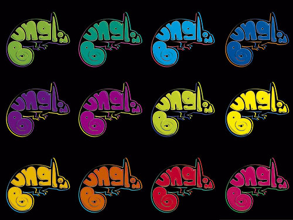
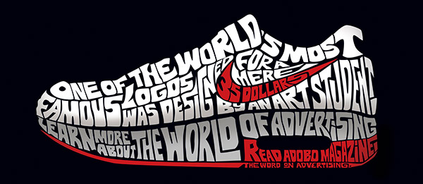
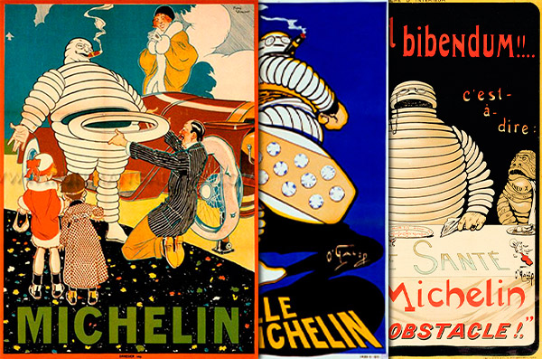
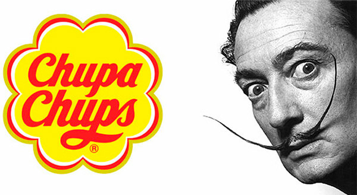
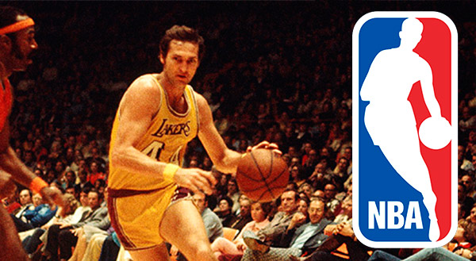
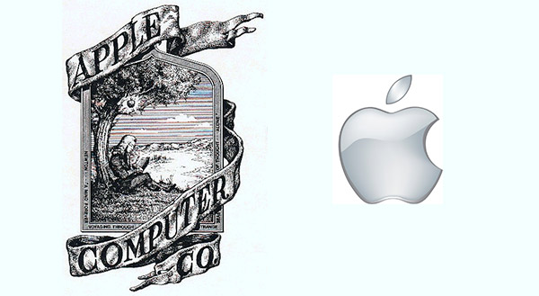

El logo es el elemento gráfico que identifica una marca, este debe de ser impactante, sin complicaciones visuales para facilitar la recordación, funcional, reflejando las principales características de la marca, y efectivo, que las personas se identifiquen con él y que produzca la confianza de la gente en el producto.
Logos
El logo es el elemento gráfico que identifica una marca, este debe de ser impactante, sin complicaciones visuales para facilitar la recordación, funcional, reflejando las principales características de la marca, y efectivo, que las personas se identifiquen con él y que produzca la confianza de la gente en el producto.


Curiosidades de algunos logos
A veces el aspecto más interesante de un logotipo no es la tipografía utilizada o el diseño en sí mismo, sino la historia que hay detrás de él. Así lo escribe Mark Sinclair en el libro TM: The Untold Stories Behind 29 Classic Logos.A continuacion recopilamos algunas de estas curiosas historias:
Nike
El fundador de la compañía, Phil Knight, se inspiró en la diosa griega Niké para su nombre y para su logo en el símbolo de la victoria, representado por una “V”. El hoy reconocido logo fue estilizado y diseñado por Carolyn Davidson, a la que sólo le pagaron 35 dólares por su labor.
Michelin
“El borracho de la carretera” es como se le llamaba al muñeco de Michelín en sus primeros años. Y no es de extrañar teniendo en cuenta la forma en la que se le representaba en las piezas publicitarias. Nada que ver con el personaje sonriente con el que estamos familiarizados a día de hoy.
Chupa Chups
El logotipo en forma de margarita de esta marca española fue diseñado en 1969 por el famoso pintor surrealista Salvador Dalí
NBA
Si crees que la silueta de este reconocido logo es de Jordan, estas equivocado, ya que realmente se trata del jugador estadounidense Jerry West
Apple
en 1976 el logo de apple era representado por un hombre con una manzana bajo un arbol, posiblemente aludiendo al fisico Isaac Newton.